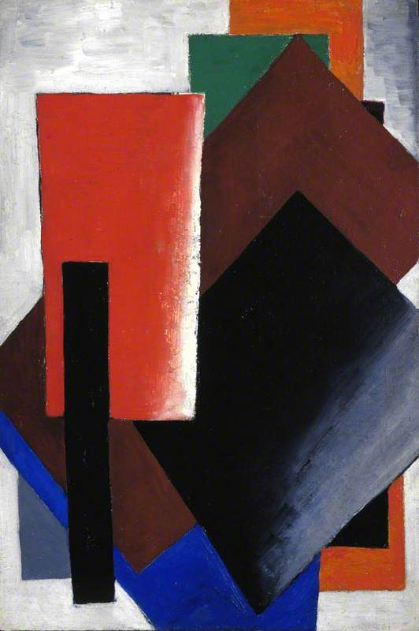
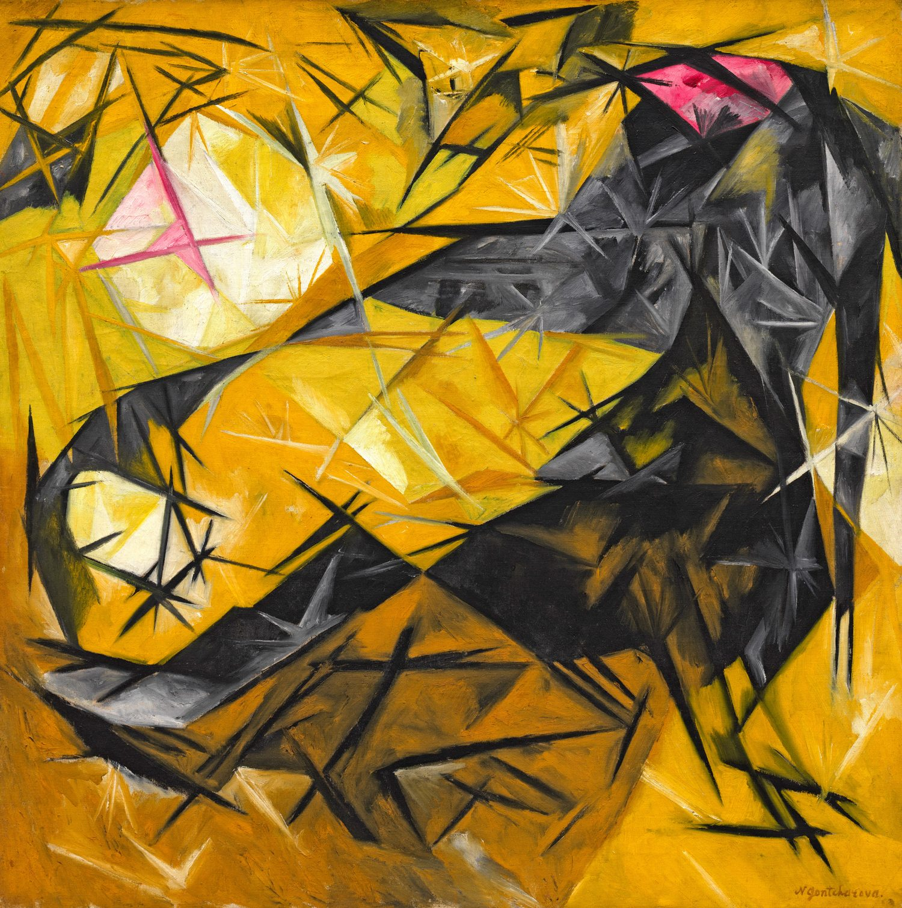

Season 1913 — 1929
The stage as a machine.
Sets, costumes and constructions from the years the Russian avant-garde reinvented the theatre — a playbill archive of the productions that changed the stage.
12Productions
6Designers
1913–29Seasons
60Archive photos

A-011913
Victory over the Sun
Kazimir Malevich · Luna Park Theatre
Futurist opera · view bill →
A-021922
The Magnanimous Cuckold
Lyubov Popova · Meyerhold Theatre
Constructivist · view bill →A-03
PLAYBILL
PLAYBILL
A-031922
The Death of Tarelkin
Varvara Stepanova · Meyerhold Theatre
Constructivist · view bill →A-04
PLAYBILL
PLAYBILL
A-041917
Salomé
Alexandra Exter · Kamerny Theatre
Tragedy · view bill →A-05
PLAYBILL
PLAYBILL
A-051921
Romeo and Juliet
Alexandra Exter · Kamerny Theatre
Drama · view bill →
A-061923
Earth Rampant
Lyubov Popova · Meyerhold Theatre
Agit-drama · view bill →A-07
PLAYBILL
PLAYBILL
A-071929
The Bedbug
Constructivist workshop · Meyerhold Theatre
Satire · view bill →
A-081921
Spatial Stage Construction
OBMOKhU group · Studio production
Constructivist · view bill →
A-091920
Suprematist Tableau
Kazimir Malevich · Experimental studio
Tableau · view bill →
A-101918
Non-Objective Scenery
Ivan Kliun · Studio production
Non-objective · view bill →
A-111917
Costume Colour Study
Olga Rozanova · Studio production
Costume study · view bill →
A-121915
Liturgie (design)
Natalia Goncharova · Ballets Russes
Ballet · view bill →No productions match.
Try another designer, genre or search — or reset the finding aid.
02 / Interval
Painters who built the stage.
For a decade the leading avant-garde painters worked in the theatre — and the Edik Natanov Collection keeps the works and photographs that let those vanished productions be seen again.